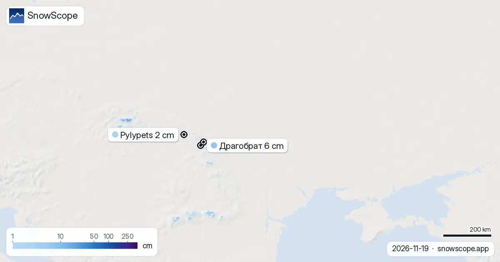
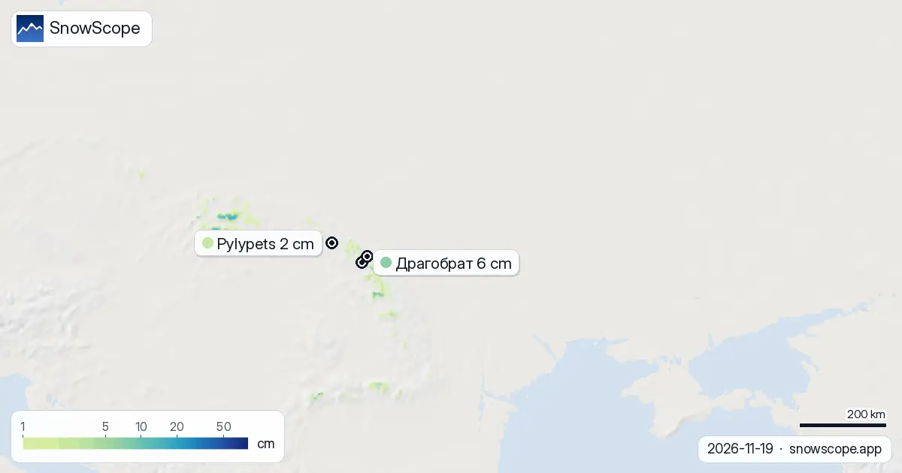

Карпати України отримають 28 см снігу на наступному тижні
Значна снігова подія рухається до Карпатських гір України. На наступному тижні впаде до 28 см нового снігу, з найсильнішими опадами 21 листопада.
Дивіться сніговий прогноз для Драгобрат у застосунку SnowScopeВисота снігу, сповіщення та 3D-карта, безкоштовно.Що чекати
Наша модель снігу показує, що Україна переживатиме значне снігонадходження в найближчі дні. Протягом наступних 3 днів гори можуть очікувати до 24 см нового снігу. До 7-го дня це збільшиться до 28 см. Пік снігопаду прогнозується на 21 листопада, коли повинно впасти 8 см по всьому регіону.
Наразі лише 370 квадратних кілометрів змодельованої площі мають снігове покриття. Це тонке покриття. Лінія снігу розташована на висоті 1500 метрів, тому нижчі схили залишаються голими. Яка штормова система це суттєво зміни, особливо вище 1500 метрів, де глибина снігу вже становить близько 3 см.
| Курорт | Висота снігу | Новий сніг, 72 год | Найближчі дні | Вершина |
|---|---|---|---|---|
| Драгобрат | 6 cm | 12 cm | 24 cm | 1 706 m |
| Pylypets | 2 cm | 4 cm | 8 cm | 1 165 m |
| Буковель | 1 cm | 2 cm | 10 cm | 1 370 m |

Де буде найкраща умови зі снігом
Чорногора лідирує з 13 см нового снігу за останні 72 години. Це хребет захопить більшість від системи, що наближається. Хребет Боржава слідує близько позаду з уже 12 см, а Горгани отримали 9 см. Ці високі хребти, що тягнуться вище 1500 метрів, будуть основною метою під час наближення шторму.
Драгобрат розташований на висоті 1706 метрів і наразі має 6 см. Протягом наступних 3 днів він повинен набрати 24 см, що зробить його найкращим курортом на 21 листопада. Полипець на висоті 1165 метрів нижче розташований і отримає менше снігу. Буковель стоїть перед подібним викликом на висоті 1370 метрів, хоча обидва отримають користь, коли свіжий сніг досягне їх вершин.

Смуги снігу сьогодні
Нижче 1000 метрів гори голі. Між 1000 і 1500 метрами лише 4 відсотки території мають сніг. Це на висоті 1500-2000 метрів, де умови починають покращуватися. Тут 68 відсотків місцевості вкрито середньою товщиною 3 см. Це тонке покриття, і скелі можуть виступати в багатьох місцях.
Новий сніг заповнить ці прогалини. До 21 листопада та наступних днів покриття розширюватиметься вниз, коли температури впадуть і система посилиться. Найвищі вершини будуть найбезпечнішими спочатку, оскільки свіжий сніг на нижчих висотах може оголити скелі або стати плямистим.
Що сталося цього тижня
Минулий тиждень був драматичним і невизначеним. У неділю, 16 листопада, 1650 квадратних кілометрів мали снігове покриття в горах. Вчора це впало до 430 квадратних кілометрів. Сьогодні становить 370 квадратних кілометрів. Лінія снігу відступила вгору, а регіон втратив значне покриття. Теплий повітрю та, можливо, дощ смели багато раннього сезонного снігу.
Драгобрат і Полипець змінювали один одного як лідери. На сьогодні Драгобрат має 6 см на своїй вершині, Полипець - 2 см. Ця нестабільність відображає теплу, нестійку схему. Система, що наближається, повинна стабілізувати рівні снігу та підняти їх вище протягом тижня.
Поза наступними 7 днями
Прогноз стає спокійнішим після події 21 листопада. Другий тиждень, з 27 листопада по 3 грудня, показує лише 4 см нового снігу. Це різке падіння від того, що приходить зараз. Це говорить про те, що ця система є головним шансом для значного накопичення в короткотерміновій перспективі. Після того як вона пройде, умови можуть знову стати сухими.
Практичні поради для лижників
Якщо ви плануєте кататися в горах, дата 21 листопада та наступні 3 дні - ваше вікно. Драгобрат отримає найбільше снігу з усіх курортів. Залишайтеся вище 1500 метрів, де новий сніг буде найглибшим. Нижчі схили на Полипці та Буковелі будуть плямистими і небезпечними. Спостерігайте офіційний лавинний бюлетень, якщо ви відправляєтеся за межи підготовлених трас, особливо на крутих схилах, що отримують свіжий сніг. Кам'яниста місцевість все ще поширена нижче 1500 метрів, тому ретельно спланюйте свій маршрут.
Поради лижникам
- Спрямуйтеся на Драгобрат або високі хребти (Чорногора, Боржава) на 21 листопада та одразу після нього, щоб отримати найглибший новий сніг.
- Залишайтеся вище 1500 метрів, де новий порошок накопичуватиметься найтовщіше, і скелі менш імовірно будуть оголені.
- Уникайте нижчих курортів, таких як Полипець та Буковель, у перші 72 години; вони отримають менше снігу, а місцевість залишається кам'янистою.
- Проконсультуйтеся з офіційним лавинним бюлетенем перед катанням за межи підготовлених трас; свіжий сніг на крутих схилах несе ризик.
- Будьте готові рано: спокійніший тиждень, що наступає, означає, що ця подія - ваш найкращий шанс для хороших умов катання в найближчі тижні.
About these numbers
Resort snow depths are the deepest snow on the resort's upper slopes on the date shown; they are estimates for an area, not a measurement at one point. Forecasts can change. Always read the official avalanche bulletin before going off-piste.
Cite this report
For research, teaching or the press: the numbers and charts are free to reuse under CC BY 4.0 with this citation.
SnowScope (2026), Карпати України отримають 28 см снігу на наступному тижні, https://snowscope.app/blog/uk/2026/11/ukraine-snow-on-the-way-19-november-2026.html, accessed 2026-11-19
SnowScope (Atlas Labs). (2026, November 19). Карпати України отримають 28 см снігу на наступному тижні. SnowScope snow reports. https://snowscope.app/blog/uk/2026/11/ukraine-snow-on-the-way-19-november-2026.html
BibTeX
@misc{snowscope2026ukrainesnowontheway19nov,
author = {{SnowScope (Atlas Labs)}},
title = {Карпати України отримають 28 см снігу на наступному тижні},
year = {2026},
month = nov,
howpublished = {\url{https://snowscope.app/blog/uk/2026/11/ukraine-snow-on-the-way-19-november-2026.html}},
note = {Published 2026-11-19 13:42 UTC; accessed 2026-11-19}
}· CC BY 4.0 · Methods, data and tools →
Драгобрат: snow and temperature by height, this winter vs last (tools) →
Follow Драгобрат
Безкоштовно: повідомлення, коли йде новий сніг, і прогноз щоранку.